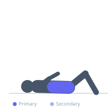

Exercise guide / Dead Bug with Arm/Leg Extension
Dead Bug with Arm/Leg Extension
The dead bug with arm and leg extension is a rehabilitation-originated core stability exercise in which the athlete lies supine with the lower back pressed flat, then alternately extends the opposite arm and leg toward the floor while resisting spinal rotation and lumbar extension. Unlike crunches, this exercise trains the core in its primary stabilization function — resisting motion while the limbs create destabilizing forces — making it highly transferable to athletic performance and injury prevention.
Primary muscles
transverse abdominis
rectus abdominis
Secondary muscles
internal oblique
external oblique
erector spinae
Stabilizers
iliacus
deltoid anterior
Equipment
No Equipment (Bodyweight)


Starting position
- Lie on your back with the lower back pressed firmly to the floor. Arms extended vertically above the chest, hips and knees at 90 degrees (tabletop position for the legs).
Setup
- Use a mat. The key is to feel the lower back pressing into the floor and to maintain this contact throughout the entire movement.
Steps
- Step 1: Begin in the starting position with arms vertical and legs in tabletop.
- Step 2: Take a deep breath and brace the core by pushing the lower back into the floor.
- Step 3: Simultaneously lower the right arm overhead toward the floor and extend the left leg, lowering the heel toward the floor.
- Step 4: Move slowly and do not let the lower back arch away from the floor.
- Step 5: Return to the starting position with control, then repeat on the opposite side.
Coaching cues
- Flatten your back into the floor — no gaps
- Move like you are in slow motion
- Opposite arm and leg extend together
Breathing
- Exhale forcefully before each rep to engage the core. Breathe continuously but maintain the brace throughout the limb extension.
Range of motion
- Full extension means the extended leg is nearly parallel to the floor and the arm reaches fully overhead. Reduce range if lower back contact is lost.
Tempo
- 3–4 seconds per limb extension, 2 seconds to return. Slow and deliberate.
Common mistakes
- Allowing the lower back to arch away from the floor as the limbs extend
- Moving too fast — this is a slow, deliberate stability exercise
- Extending the leg at the knee rather than lowering the entire leg as a unit
Safety
- If the lower back arches, reduce leg extension (do not fully straighten the leg or only lower the leg partway).
- Appropriate for most populations including post-partum and those with lower back pain, when performed correctly.
Training
- strength: 6–12 reps
- endurance: 12–20 reps
- strength: 2–4 sets
- endurance: 3–4 sets
- Rest: {'strength': 60, 'endurance': 45}